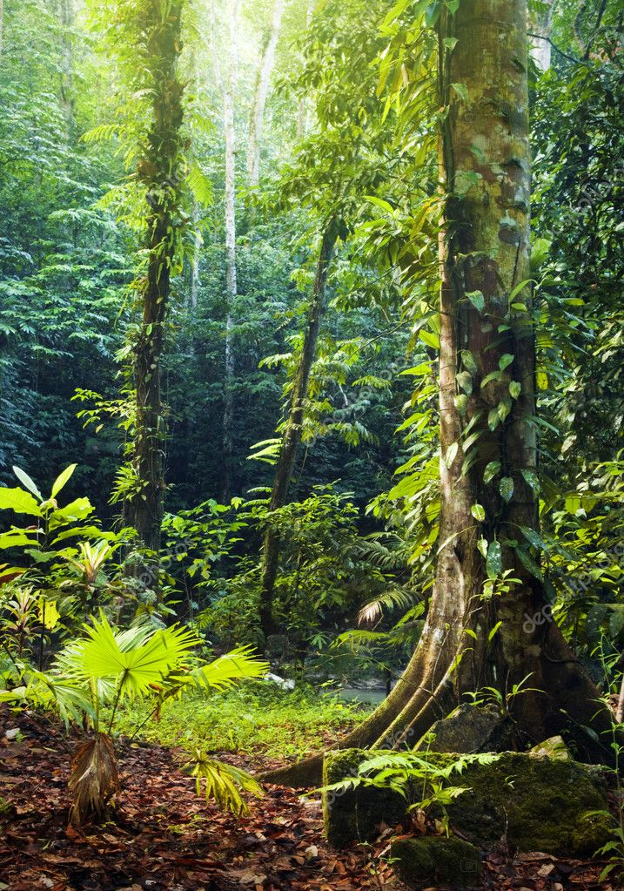
¿a donde ir?
¿no se te ocurre ningun lugar?
Te daremos unos pocos ejemplos a los cuales puedes viajar somo muy flexibles a la hora de viajar y al hacer el servicio para que tu viaje sea mas como y como lo planeaste podemos llevarte a cualquier parte de la republica mexicana ya sea en el norte, centro o sur del pais
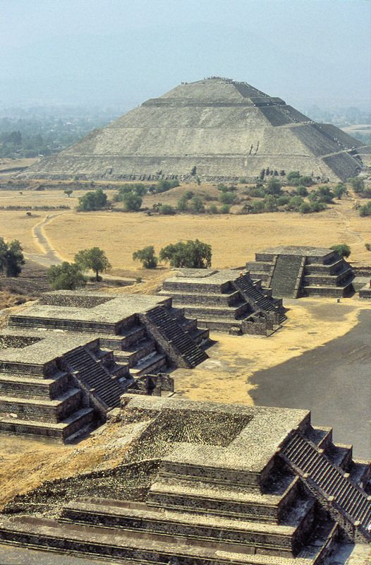
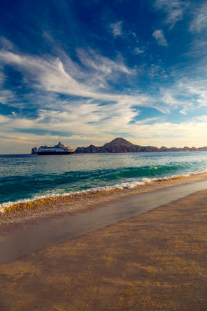

mas frecuentes.
te podria interesar.
-

Quintana Roo
Zona Arqueológica de Tulum.
Tulum fue una ciudad amurallada de la cultura maya ubicada en el Estado de Quintana Roo, en el sureste de México, en la costa del mar Caribe. Es en la actualidad un gran atractivo turístico de la Riviera Maya.
-
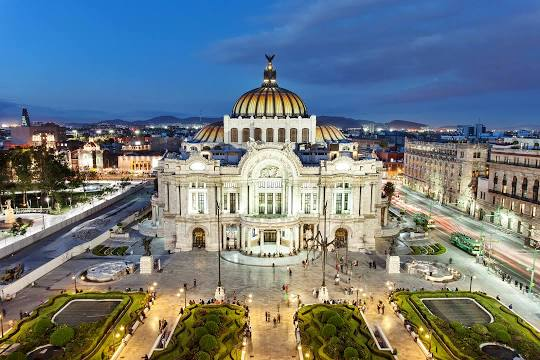
Ciudad de Mexico
Palacio de Bellas Artes.
El Palacio de Bellas Artes es un recinto cultural ubicado en el Centro Histórico de la Ciudad de México, considerado el más importante en la manifestación de las artes en México y una de las casas de ópera más renombradas del mundo.
-
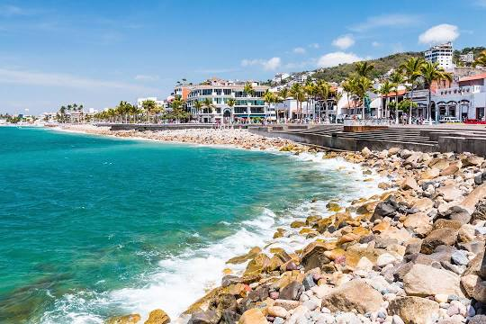
Jalisco
Malecón Puerto Vallarta.
El malecón de Puerto Vallarta es un rompeolas y un amplio andador de un kilómetro y medio de extensión situado frente al mar, que se ha convertido en uno de los principales puntos de encuentro de la ciudad.
-
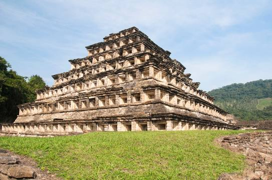
Veracruz
Zona Arqueológica El Tajín.
El Tajín es una zona arqueológica precolombina de origen totonaca que se encuentra cerca de la ciudad de Papantla, Veracruz, México. Se cree que la ciudad de Tajín fue la capital del imperio Totonaca.
-
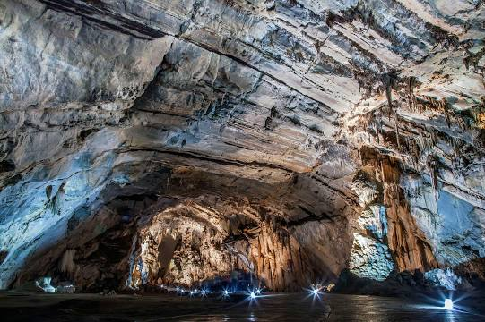
guerrero
Parque Nacional Grutas de Cacahuamilpa
El parque nacional Grutas de Cacahuamilpa es un Área Natural Protegida, que de acuerdo con la Comisión Nacional de Áreas Naturales Protegidas de la SEMARNAT está dentro de la categoría de parque nacional.
-
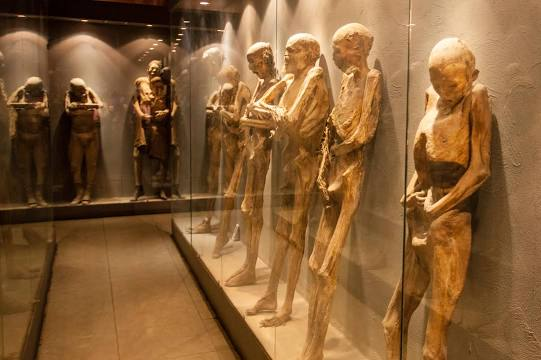
Guanajuato
Museo de las Momias de Guanajuato.
Se localiza en la explanada del panteón de Santa Paula. Su origen se remonta al descubrimiento de las primeras momias en el panteón de Santa Paula en 1865, En la actualidad son más de cien las momias que forman parte del inventario del museo.
empieza solicitando el servicio
Un pedido es la forma en que te comunicas con el encargado de hacer tu viaje y asi tambien señalar ciertas especificaciones de a donde quieres viajar solo llenando un formulario
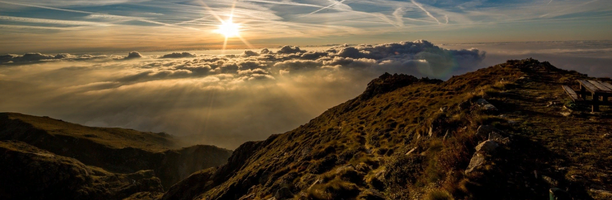
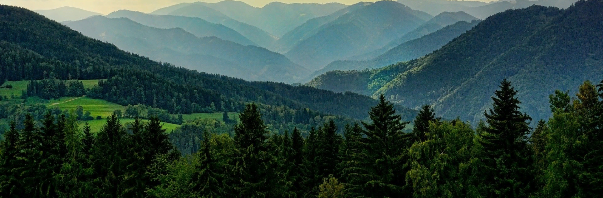

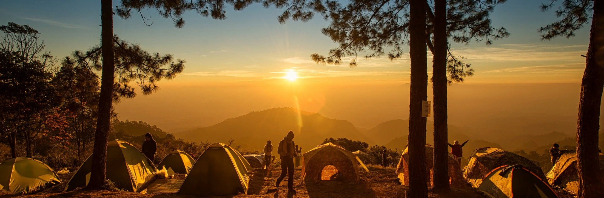

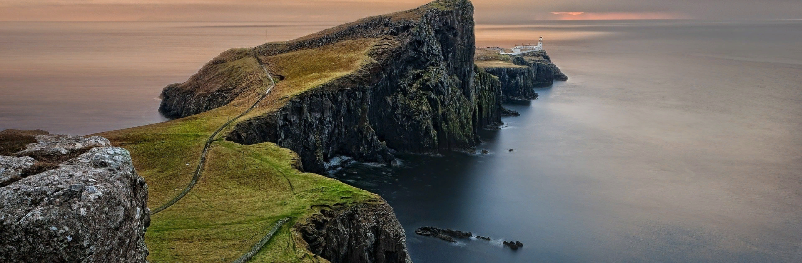
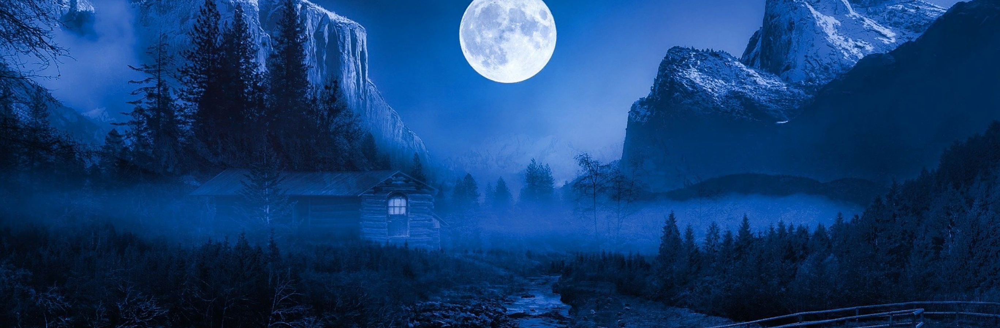
te podria interesar
Muchas veces cuando viajamos tenemos en cuenta muchas variables, como lugares interesantes, el clima, el alojamiento o la vida social del destino. Pero rara vez, reflexionamos sobre el impacto de nuestras vacaciones.
Viajar es una actividad que todos disfrutamos. Cuando salimos de vacaciones, podemos ser simples turistas o contribuir a transformar nuestro entorno positivamente.
Con valores de tolerancia y aprendizaje entre las culturas, el turismo responsable se opone al turismo de masas.
Aqui te dejamos unos unas recomendaciones para que tu viaje sea mas agradable
- ➢ Respeto mutuo
- ➢ Ayuda a conservar el entorno natural
- ➢ Consume recursos de manera responsable
- ➢ Respeta los usos y costumbres
- ➢ Compra y consume local
- ➢ Valora los recursos culturales
empieza ya
¿como?
solo haz tu pedido
¿donde?
donde tu quieras.
¿por que?
por que tu mandas.
¿cuando?
cuando tu quieras.